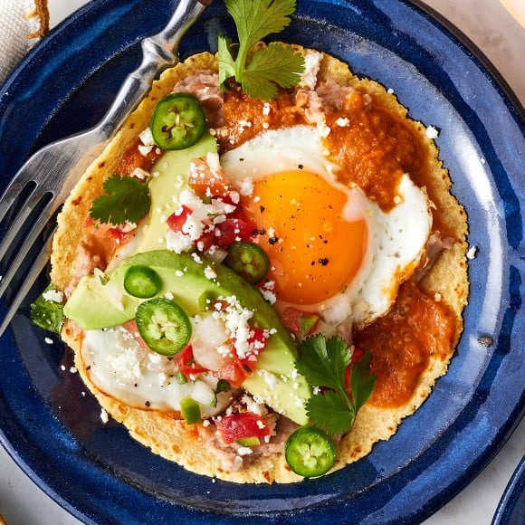

Recipe for Huevos Rancheros

The Most Important Meal of the Day...
Huevos rancheros are the best way to start the day! I think so, at least.
After visits to beautiful Mexico, I love any breakfast made with tortillas + salsa + eggs.
Huevos rancheros are one of the simplest and most delicious.
I’m sharing my easy huevos rancheros recipe below, complete with tips, variations, and ways
to get ahead. I hope it becomes a staple in your rotation, and not just for breakfast. This
huevos rancheros recipe makes a great lunch or dinner too!
Ingredients
- Corn tortillas – Don’t use flour tortillas here! The corn tortillas add rich flavor to the dish.
- Refried beans – Make homemade refried beans, or use store-bought.
- Ranchero sauce – This cooked, tomato-based sauce is zesty, spicy, and easy to make with fresh
ingredients. It’s my favorite sauce to use on huevos rancheros, but it’s not the only option.
If you like, try using warm salsa roja or my tomatillo salsa verde instead.
- – Sunny side up eggs are traditional, but if you prefer to cook your eggs a different way, feel
free! Scrambled eggs and poached eggs both work well here.
- Toppings of choice – I load up my huevos rancheros with creamy avocado, juicy pico de gallo, fresh
cilantro, spicy jalapeños, and tangy Cotija cheese. Use all of these toppings, or just choose a few!
- And salt and pepper – To make all the flavors pop!
Directions
- Your first step is preparing the salsas. If you’re using the pico de gallo,
prep it first. This fresh salsa is quick and easy to make by dicing tomatoes, onion, cilantro, and a
jalapeño and mixing them together with lime juice and garlic. After you mix it up, pop it in the fridge
to chill while you make the ranchero sauce on the stove.
- Next, lightly fry the tortillas. Brush a nonstick skillet with olive oil and heat it
over medium heat. Cook each tortilla for about 15 seconds per side, or until it puffs up slightly and
becomes fragrant.
- Then, cook the eggs. Add more oil to the skillet and fry the eggs according to my
fried egg recipe. When the yolks reach your desired doneness (I love a runny yolk here!),
season them with salt and pepper to taste.
- Finally, assemble the huevos rancheros. Slather each tortilla with warm refried beans.
- Top with some of the ranchero sauce followed by a fried egg. Layer on more of the sauce and whatever
toppings you like! I always add sliced avocado, pico de gallo, cilantro, jalapeños, and Cotija cheese.
Lastly...Enjoy!